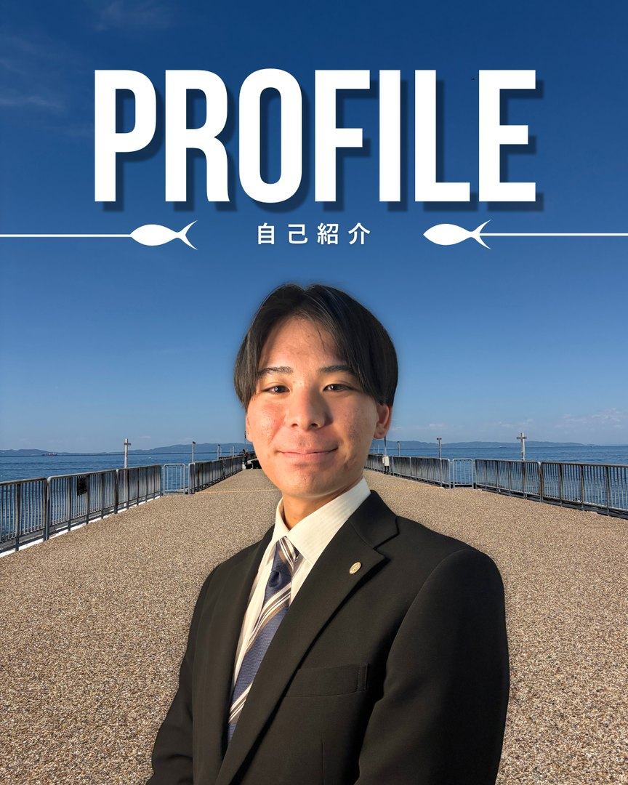

PROFILE
プロフィール
- 名前
- 生田 陽太
- 経歴
- 沖縄の動物園で約3年半の間、飼育員として勤務しました。
退職後は職業訓練校でデザイン制作を学び、現在は大阪の不動産会社で企業SNSのコンテンツ制作を担当しています。 - 担当業務
- Instagram・TikTok・YouTube向けの採用・広報動画を、企画から撮影、編集まで担当。動画のサムネイルやSNS投稿画像、バナーの制作も行っています。
- メッセージ
- 冒頭の見せ方や編集のテンポを工夫し、企業や働く人の魅力が伝わる動画を作っています。AIも活用し、制作の効率と視聴者からの反響の両立を目指しています。